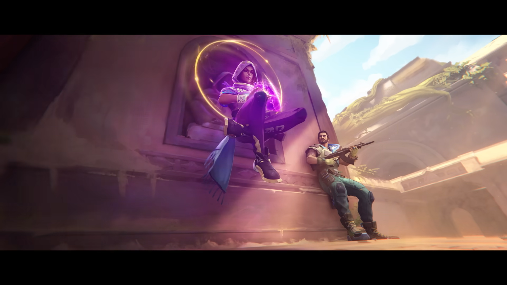

Our Six Heroes have sent their two agents namely Astra and Harbour, on a voyage to find out a new place to set up a new site.
Due to some reason they both lost communication with them and wandered all around.To re-establish the communications with our Heroes, they have to visit a place which have a certain type radiation which would help them to connect back.Somehow they reached a place which made them feel a suitable place to re-connect with our Heroes, but it wasn't that much suitable as it was gaurded by the ALPHA SQUAD, who were the greatest enemies of our heroes. It was a 2v3 scenario,the agents found it very tough to win,but yaa they won. They felt that, that place is healing them, so they locked that place as their site and named it as Calendultown. They named it so because Calendula is a plant which heals the severe wounds.